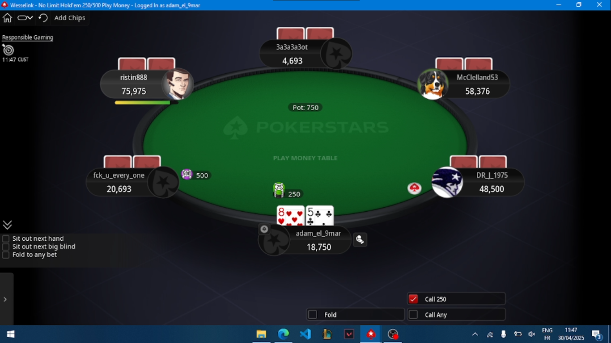
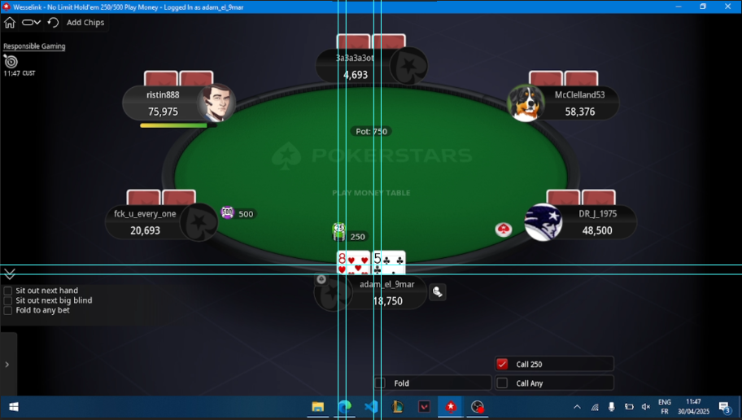
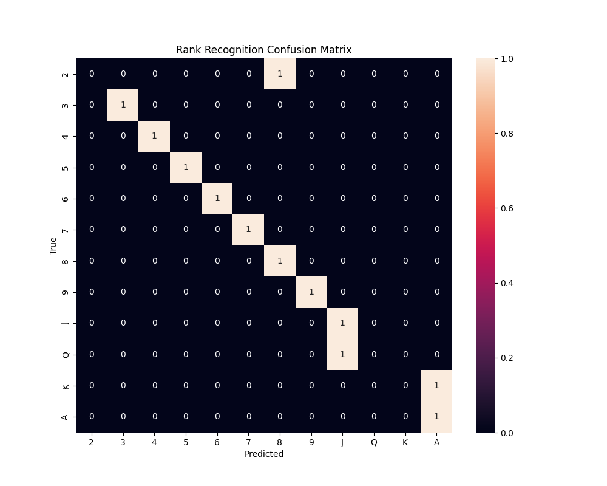
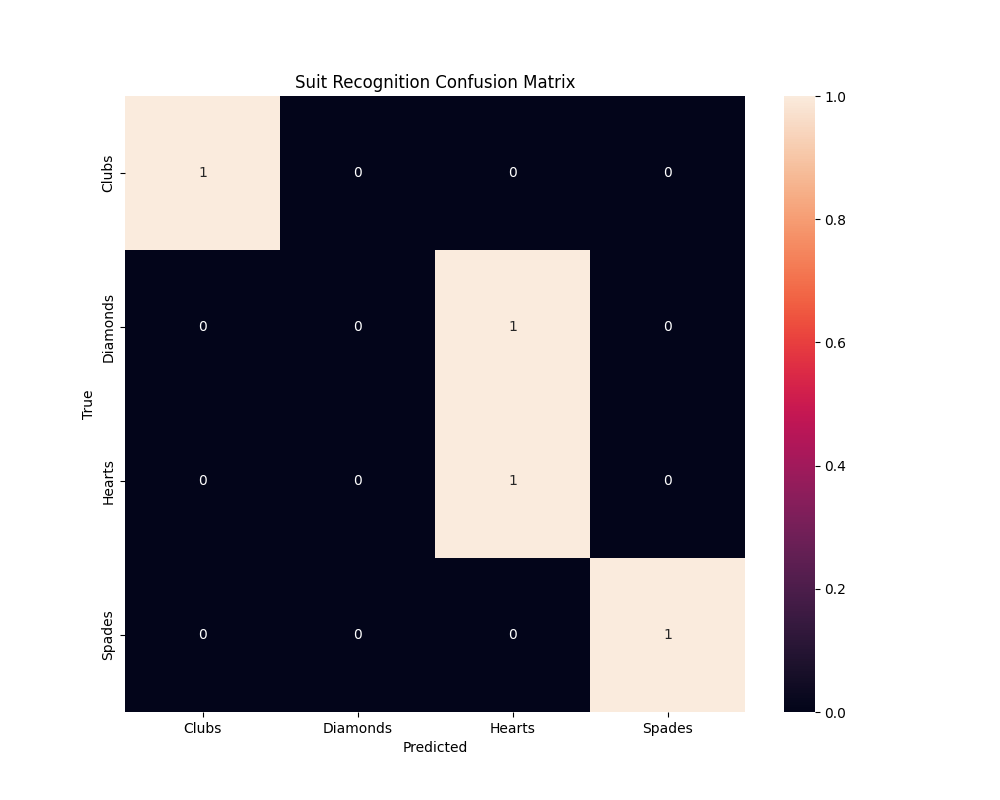
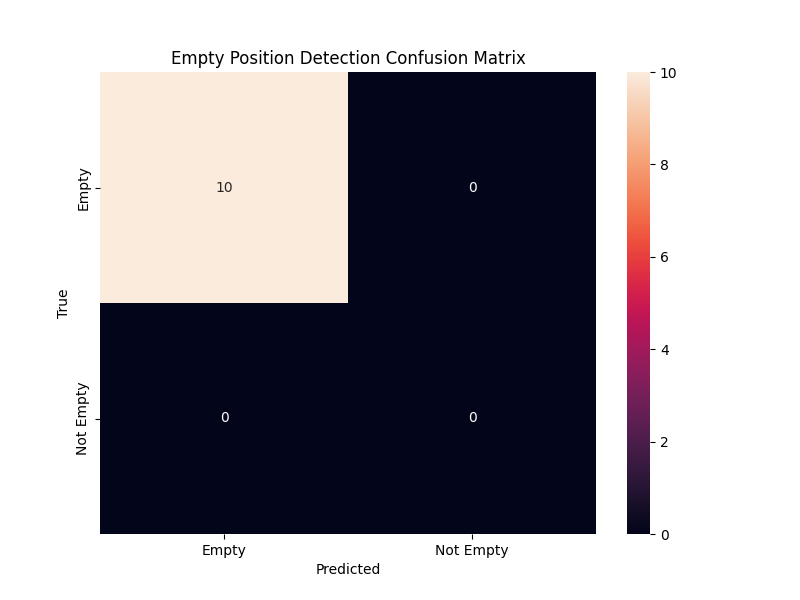
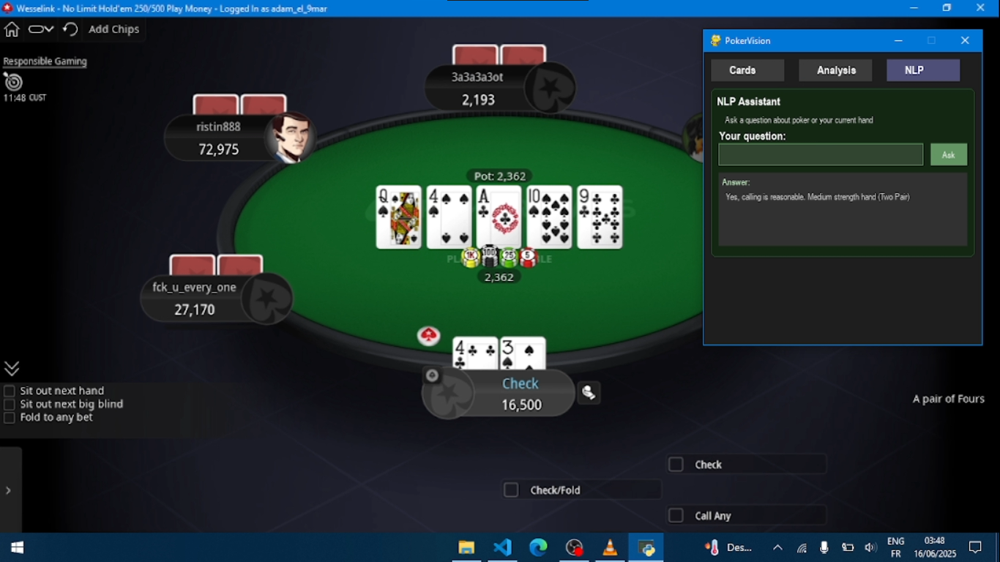
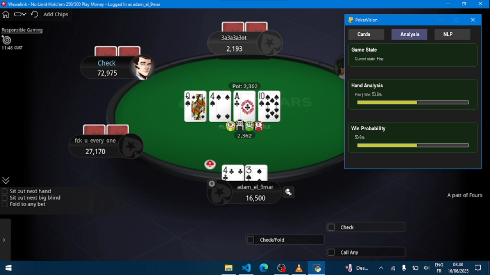
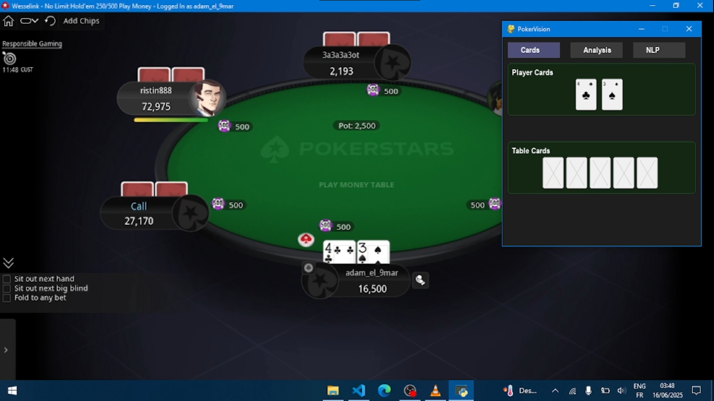

PokerVision - Assistant Poker Intelligent
Superviseur: M. Tawfik Masrour
Version: 1.0
Date: 2025
Vue d'ensemble du Projet
PokerVision est un assistant poker intelligent alimenté par l'intelligence artificielle et la vision par ordinateur, spécialement conçu pour le Texas Hold'em sur PokerStars. Le système combine des techniques avancées de traitement d'image, d'apprentissage automatique et de simulation Monte Carlo pour fournir des conseils stratégiques en temps réel.
Objectifs
- Développer un système de reconnaissance de cartes automatisé avec haute précision
- Implémenter un moteur de calcul de probabilités utilisant la simulation Monte Carlo
- Créer une interface utilisateur intuitive pour les conseils stratégiques
- Atteindre un taux de victoire supérieur à 40% sur des parties longues
Pile Technologique
Résultats Obtenus
Composants Clés
Système de Détection de Cartes
Utilise la vision par ordinateur pour capturer et analyser les captures d'écran de PokerStars, identifiant automatiquement les cartes, les positions et les actions des joueurs.
Moteurs d'Intelligence Artificielle
PokerVision emploie deux méthodes distinctes de reconnaissance de cartes :
1. Réseaux Neuronaux (Neural Networks)
Utilise des modèles de deep learning entraînés pour reconnaître les rangs et couleurs des cartes avec une haute précision.
2. Template Matching (Correspondance de Modèles)
Implémente l'algorithme de correspondance de modèles d'OpenCV pour comparer les images de cartes à des templates prédéfinis. Cette méthode est particulièrement efficace pour les environnements avec des conditions visuelles constantes.
python main.py neural # Utiliser les réseaux neuronaux
python main.py template # Utiliser le template matching
Interface Utilisateur
Interface PyGame intuitive affichant les conseils stratégiques, les probabilités et les métriques de performance en temps réel.
Guide d'Installation
Prérequis Système
- Python 3.7 ou supérieur
- Windows 10/11 (pour la compatibilité PokerStars)
- Minimum 8GB RAM
- GPU compatible CUDA (recommandé pour l'entraînement des modèles)
Installation des Dépendances
1. Cloner le Repository
cd pokervision
2. Créer un Environnement Virtuel
python -m venv env
env\Scripts\activate.bat # Windows
# ou
source env/bin/activate # Linux/Mac
3. Installer les Dépendances
Fichier requirements.txt
tensorflow==2.13.0
pygame==2.5.2
numpy==1.24.3
scikit-learn==1.3.0
pillow==10.0.1
matplotlib==3.7.2
pyautogui==0.9.54
pynput==1.7.6
Configuration Initiale
1. Entraîner les Modèles (optionnel)
2. Tester les Modèles (optionnel)
Lancement de PokerVision
Architecture Technique
Vue d'ensemble de l'Architecture
PokerVision suit une architecture modulaire composée de trois couches principales :
Couche de Vision par Ordinateur
Responsable de la capture et de l'analyse des images depuis PokerStars.
Composants :
- Screen Capture Module - Capture des zones spécifiques de l'écran
- Card Detection System - Localisation des cartes dans l'image
- Region of Interest (ROI) Extractor - Extraction des zones pertinentes
Couche d'Intelligence Artificielle
Traite les données visuelles et génère des prédictions.
Composants :
- CNN Rank Classifier - Classification des rangs de cartes
- CNN Suit Classifier - Classification des couleurs de cartes
- Monte Carlo Engine - Simulation des probabilités
Couche de Décision
Analyse les probabilités et génère des conseils stratégiques.
Composants :
- Strategy Engine - Génération de conseils
- Risk Calculator - Calcul des risques
Flux de Données
Pipeline de Vision par Ordinateur
Capture d'Écran
Le système capture automatiquement les zones spécifiques de l'interface PokerStars.

Détection des Cartes
Utilise des techniques de traitement d'image pour isoler les cartes individuelles.

Préprocessing des Images
Normalisation et amélioration des images de cartes pour la classification.
Métriques de Performance
| Métrique | Valeur | Description |
|---|---|---|
| Précision de détection | 96.5% | Pourcentage de cartes correctement détectées |
| Temps de traitement | 45ms | Temps moyen de détection par image |
| Faux positifs | 2.1% | Détections incorrectes |
Réseaux de Neurones
Architecture des Modèles CNN
PokerVision utilise deux réseaux de neurones convolutifs spécialisés pour la classification des cartes.
Modèle de Classification des Rangs
Ce modèle CNN comprend:
- 3 couches convolutives (32, 64, 128 filtres) avec activation ReLU
- Couches MaxPooling pour réduire la dimensionnalité
- Couche Dense de 512 neurones avec dropout 0.5
- Couche de sortie de 13 neurones (un pour chaque rang)
- Optimiseur Adam et fonction de perte categorical_crossentropy
Modèle de Classification des Couleurs
Ce modèle utilise une architecture plus légère:
- 3 couches convolutives (16, 32, 64 filtres) avec activation ReLU
- Couches MaxPooling après chaque convolution
- Couche Dense de 256 neurones avec dropout 0.3
- Couche de sortie de 4 neurones (un pour chaque couleur)
- Même configuration d'optimisation que le modèle de rangs
Entraînement des Modèles
Le processus d'entraînement inclut:
- Arrêt précoce avec patience de 10 époques
- Réduction du taux d'apprentissage sur plateau
- Validation croisée avec 20% des données
- Batch size de 32 pour l'équilibre performance/mémoire
- Callbacks pour sauvegarder les meilleurs modèles
Performance des Modèles
Matrices de Confusion



Template Matching
Principe et Fonctionnement
Le template matching est une technique de vision par ordinateur qui identifie les parties d'une image correspondant à un modèle prédéfini (template).
Mise en œuvre dans PokerVision
Notre système utilise l'algorithme de correspondance de modèles d'OpenCV pour comparer les images de cartes capturées avec des templates de référence. Le processus comprend:
- Création de templates de référence pour chaque rang (2-A) et couleur (♠♥♦♣)
- Calcul d'un score de similarité entre l'image capturée et chaque template
- Identification du template avec le meilleur score de correspondance
- Filtrage des faux positifs par seuillage du score de confiance
Avantages du Template Matching
Performance
Cette approche est particulièrement efficace lorsque:
- L'interface de PokerStars reste constante (pas de changements de thème)
- Les conditions d'éclairage et d'échelle sont stables
- Une faible utilisation des ressources système est prioritaire
Assistant NLP
Vue d'ensemble
L'assistant NLP (Natural Language Processing) permet aux joueurs d'interagir en langage naturel avec PokerVision pour obtenir des conseils stratégiques et des informations sur le poker.
Architecture du Module NLP
Le système NLP utilise une approche hybride combinant:
- Vectorisation TF-IDF pour la compréhension sémantique des requêtes
- Similarité cosinus pour le matching des questions avec la base de connaissances
- Analyse contextuelle basée sur l'état actuel de la partie
- Système de déclencheurs pour les requêtes spécifiques au gameplay
Pipeline de Traitement des Requêtes
Le processus de traitement des questions suit ces étapes:
- Prétraitement du texte (minuscules, suppression de ponctuation)
- Tokenisation et stemming pour normalisation linguistique
- Comparaison vectorielle avec la base de connaissances
- Détection de déclencheurs spécifiques au gameplay
- Génération de réponses contextuelles basées sur l'état du jeu
Types de Réponses
Intégration avec l'État du Jeu
L'assistant NLP s'adapte dynamiquement à l'état actuel de la partie:
- Accès en temps réel à l'analyse de la main actuelle
- Consultation des recommandations stratégiques
- Personnalisation des réponses selon les probabilités calculées
- Adaptation des conseils en fonction de la force de la main
Q: "Should I fold this hand?"
A: "No need to fold. You have a 65.3% chance to win. Raising is recommended."
Interface Utilisateur
L'interface de l'assistant NLP comprend:
- Zone de saisie de texte pour les questions
- Bouton d'envoi pour soumettre les requêtes
- Zone d'affichage des réponses avec formatage
- Intégration dans le système d'onglets de l'interface principale

Simulation Monte Carlo
Principe Mathématique
La simulation Monte Carlo estime les probabilités de victoire en simulant des milliers de scénarios possibles pour le reste de la partie.
P(victoire) = Nombre de simulations gagnantes / Nombre total de simulations
Métriques de Simulation
| Paramètre | Valeur | Impact |
|---|---|---|
| Nombre de simulations | 10,000 | Équilibre précision/vitesse |
| Temps de calcul | 250ms | Compatible temps réel |
| Marge d'erreur | ±2% | Acceptable pour le poker |

Guide d'Utilisation
Démarrage Rapide
python main.py
Interface Utilisateur

Éléments de l'Interface
- Zone de Probabilités - Affiche les chances de victoire en temps réel
- Conseils Stratégiques - Recommandations d'action (Fold, Call, Raise)
- Analyse des Cartes - Cartes détectées et leur force
- Statistiques de Session - Métriques de performance actuelles
Configuration Avant Utilisation
Positionnement de PokerStars
Utilisation en Partie
Étapes Typiques
- Lancer PokerStars et rejoindre une table
- Démarrer PokerVision
- Vérifier que la détection fonctionne (voyant vert)
- Jouer en suivant les conseils affichés
Interprétation des Conseils
| Conseil | Probabilité | Action Recommandée |
|---|---|---|
| FOLD | < 25% | Se coucher immédiatement |
| CALL | 25% - 60% | Suivre la mise |
| RAISE | > 60% | Relancer selon la force |
Entraînement des Modèles
Structure du Dataset
Le dataset contient des images de cartes annotées manuellement pour l'entraînement supervisé des modèles de reconnaissance.
├── cards/
│ ├── ranks/
│ │ ├── r_2/ (images de cartes avec rang 2)
│ │ ├── r_3/
│ │ └── ... (jusqu'à r_A)
│ │ ├── b_2/ (images de cartes avec rang 2)
│ │ ├── b_3/
│ │ └── ... (jusqu'à b_A)
│ └── suits/
│ ├── Spades/ (images de cartes de pique)
│ ├── Hearts/
│ ├── Diamonds/
│ └── Clubs/
├── empty/ (positions sans cartes)
└── templates/ (modèles pour template matching)
Processus d'Entraînement
L'entraînement des modèles de classification est réalisé avec les techniques suivantes:
- Augmentation de données (rotation, zoom, décalage) pour améliorer la robustesse
- Normalisation des images pour une meilleure convergence
- Validation croisée avec 20% des données pour éviter le surapprentissage
- Techniques de régularisation (dropout, L2) pour généraliser
- Callbacks pour sauvegarder les meilleurs modèles
Hyperparamètres Optimaux
Résultats d'Entraînement
| Modèle | Précision Train | Précision Test |
|---|---|---|
| Classification Rangs | 99.5% | 98.2% |
| Classification Couleurs | 100% | 100% |
| Détection Position Vide | 100% | 100% |
Métriques de Performance
Résultats de Test sur 100 Parties
Performance par Type de Main
| Type de Main | Fréquence | Taux de Victoire | Profit Moyen |
|---|---|---|---|
| Paires Premium (AA, KK, QQ) | 4.5% | 78% | $2,340 |
| Mains Fortes (AK, AQ, JJ) | 8.2% | 65% | $1,680 |
| Mains Moyennes | 15.3% | 45% | $420 |
| Mains Faibles | 72% | 18% | -$180 |
Métriques Techniques
Performance du Système
| Composant | Temps de Traitement | Précision |
|---|---|---|
| Capture d'écran | 12ms | 100% |
| Détection de cartes | 45ms | 96.5% |
| Classification CNN | 15ms | 98.6% |
| Simulation Monte Carlo | 250ms | ±2% |